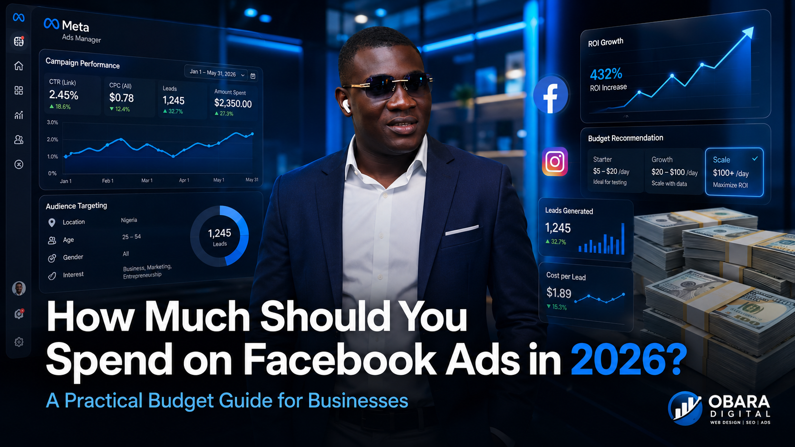

One of the most common questions business owners ask before running Facebook and Instagram Ads is: "How much should I spend?" The truth is there isn't a one-size-fits-all answer. Some businesses spend ₦5,000 per day and generate consistent leads, while others spend over ₦100,000 daily and still struggle to get results because their campaigns are poorly optimized. The success of your Facebook Ads depends far more on your strategy than on the size of your budget. In this guide, you'll learn how to determine the right Facebook Ads budget for your business in 2026, avoid wasting money, and maximize your return on investment.
Many business owners believe that spending more money automatically leads to better results. Unfortunately, that's not how Meta Ads work. Facebook's algorithm rewards advertisers who create relevant ads, target the right audience, and provide engaging content. A well-optimized campaign with a modest budget often outperforms an expensive campaign with poor targeting and weak creatives. Before increasing your budget, make sure you have:
Once these elements are in place, increasing your budget becomes much more effective.
The ideal advertising budget depends on your business goals, competition, and industry. Below are realistic recommendations for businesses in 2026.
If you're just starting with Facebook Ads, you don't need a huge budget. In fact, many successful campaigns begin with a modest daily budget while testing different audiences, creatives, and offers.
Recommended Budget:
This budget gives Meta enough data to optimize your campaign while keeping your advertising costs manageable.
Businesses such as real estate agencies, hospitals, law firms, restaurants, salons, cleaning companies, and website design agencies often target customers within a specific city or region.
Because the audience is more focused, you don't always need an extremely large budget to achieve good results.
Recommended Budget:
A well-targeted campaign can generate quality enquiries while keeping your cost per lead relatively low.
Online stores generally require larger advertising budgets because they're competing with many other businesses for the same customers.
E-commerce campaigns often include multiple objectives such as:
Recommended Budget:
Your actual budget depends on the number of products you sell, your average order value, and how competitive your market is.
One of the biggest mistakes business owners make is launching a new campaign with a massive budget before knowing what works.
Instead, begin with a smaller daily budget and allow Meta's algorithm to collect enough performance data.
Once you identify the audience, creative, and offer that consistently generate results, you can gradually increase your spending.
A common recommendation is to increase your budget by no more than 20% every few days. This helps maintain campaign stability and gives Meta time to adjust.
Many advertisers believe their campaign failed because they didn't spend enough money. In reality, budget is only one part of a successful advertising strategy.
Your campaign should also include:
Even a modest budget can produce excellent results when these elements work together.
Avoid these common mistakes that often lead to wasted advertising spend:
Successful advertisers focus on long-term optimization rather than making frequent changes based on short-term results.
Instead of choosing a random advertising budget, start by working backwards from your business goals. Ask yourself these questions:
Answering these questions helps you create a realistic advertising budget based on your business rather than guessing.
Imagine you own a website design agency.
If your average Cost Per Lead (CPL) is ₦5,000 and it takes about 10 leads to close one customer, you'll need approximately 50 qualified leads to reach your goal.
That means your estimated advertising budget would be:
50 Leads × ₦5,000 = ₦250,000 per month
This approach gives you a measurable target instead of simply hoping your ads will perform well.
Cost Per Lead (CPL) tells you how much you're paying to generate one enquiry or potential customer.
For example:
Your Cost Per Lead is:
₦100,000 ÷ 20 = ₦5,000 per lead.
Knowing your CPL helps you understand whether your campaigns are profitable and where improvements are needed.
One of the most important metrics in digital advertising is Return on Ad Spend (ROAS).
ROAS measures how much revenue you generate for every naira spent on advertising.
Example:
Your ROAS would be:
₦1,200,000 ÷ ₦200,000 = 6X ROAS
This means every ₦1 spent on advertising generated ₦6 in revenue.
Rather than asking, "How much should I spend?" a better question is:
"How much profit does my advertising generate?"
Don't increase your advertising budget simply because you have more money to spend. Increase it only after your campaign consistently delivers good results.
Signs you're ready to scale include:
When scaling, increase your budget gradually—around 10% to 20% every few days—to maintain stable performance.
Lowering your budget isn't always the answer when campaigns underperform. First, identify the real problem.
Consider reducing or pausing your campaign if you notice:
In many cases, improving your targeting, ad creative, offer, or landing page will have a much bigger impact than simply changing your budget.
Here's a simple guide to help you estimate a reasonable starting budget based on your business type.
| Business Type | Recommended Daily Budget |
|---|---|
| Small Business | ₦5,000 – ₦10,000 |
| Local Service Business | ₦10,000 – ₦20,000 |
| Growing Business | ₦20,000 – ₦50,000 |
| E-commerce Store | ₦20,000 – ₦100,000+ |
| Large Brand | ₦100,000+ per day |
Remember, these are starting points. Your ideal budget depends on your industry, competition, offer, audience, and business goals.
There isn't a perfect Facebook Ads budget that works for every business.
Instead of asking "How much should I spend?", ask:
Businesses that succeed with Meta Ads don't simply spend more money—they spend smarter. They continuously test new creatives, improve their landing pages, refine their audience targeting, and optimize their campaigns based on data.
Whether you're spending ₦5,000 per day or ₦100,000 per day, success comes from having the right strategy behind every campaign.
At Obara Digital, we help businesses create Meta Ads campaigns that generate qualified leads, increase sales, and maximize return on investment.
Our Facebook Ads services include:
Whether you're launching your first campaign or scaling an existing one, we'll help you get the best possible results from your advertising budget.
Yes. For many small businesses, ₦5,000 per day is enough to test audiences and generate initial leads. As your campaigns become profitable, you can gradually increase your budget.
Allow your campaign to run for at least 5–7 days before making significant changes. This gives Meta enough time to collect data and optimize delivery.
Meta usually delivers your ads across both Facebook and Instagram automatically through Advantage+ placements. This often provides the best overall performance.
Absolutely. A smaller budget combined with strong targeting, compelling creatives, and a good landing page can outperform a much larger budget with poor campaign setup.
Obara Digital is a digital marketing agency that helps businesses grow through professional website design, Search Engine Optimization (SEO), Meta Ads, Google Ads, and conversion-focused digital marketing strategies.
Our mission is to help businesses attract more visitors, generate more qualified leads, and increase sales through data-driven marketing.
Website: https://www.obaradigital.online
Ready to grow your business? Contact Obara Digital today.